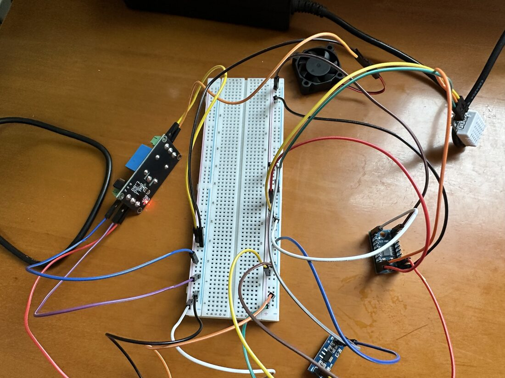
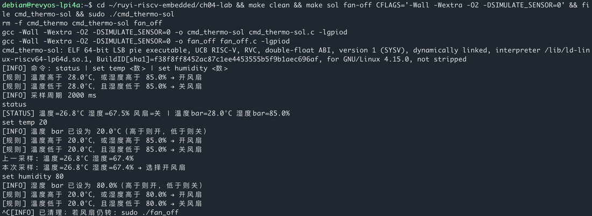

⌨ 第四章 · 命令对话与温控
风扇还是那台，传感器换成真的 DHT22。人在终端敲命令：status 看当前状态，set temp 改控温阈值。
select 在同一条循环里：一边等采样周期到，一边等你敲命令。status 立刻回报温湿度；set 改的是内存里的阈值。先用模拟传感器把命令跑通，再接真 DHT（编时带 -DSIMULATE_SENSOR=0）。验收：敲一行有回复，风扇跟着阈值走。


status 读出温湿度；set temp 后选择开风扇